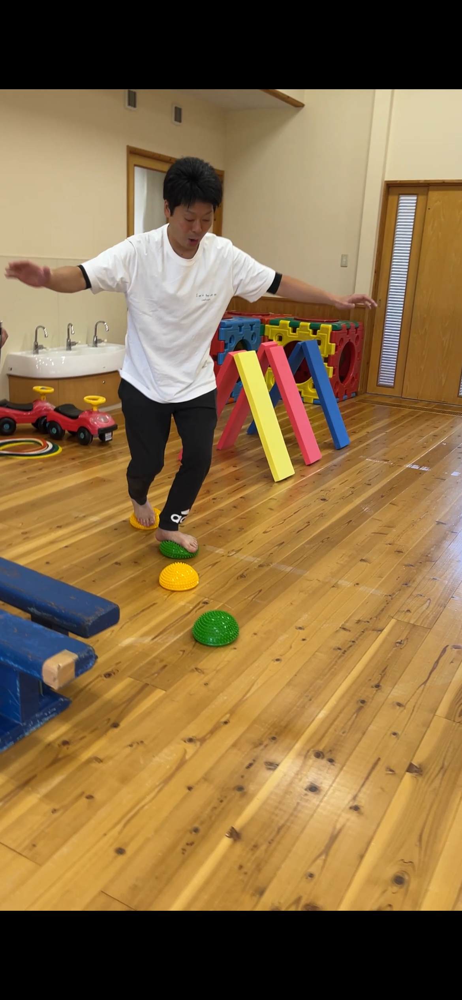
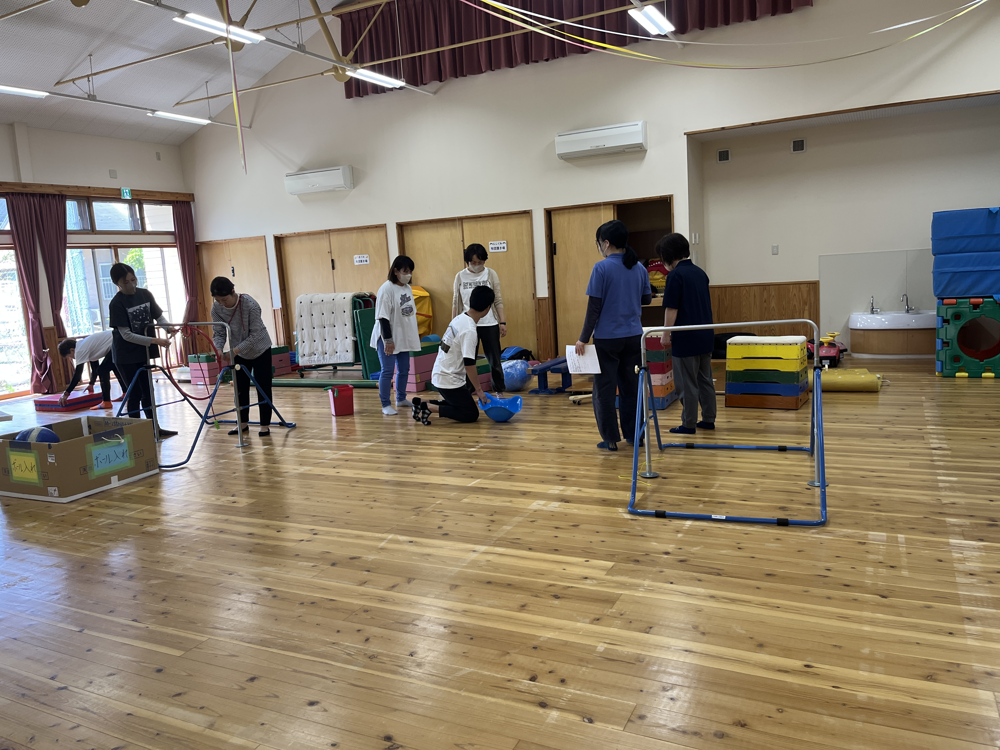
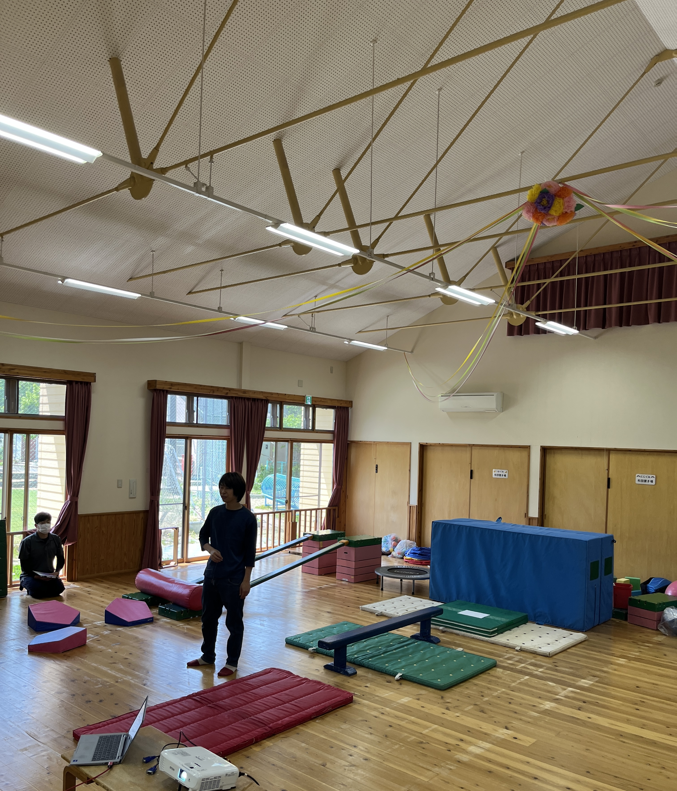

研修の概要
鳥取市内の保育施設「鳥取みどり園」にて、 保育士の皆さまを対象とした 感覚統合療法研修を実施しました。
今回の研修では、 知識の習得だけでなく、 日々の保育にすぐ活かせる視点を 持ち帰っていただくことを目的としています。
また、 実際に体験しながら理解を深める 「実践型研修」として行いました。
研修の様子




研修内容
- 感覚統合の基礎理解
- 子どもの行動の背景理解
- 保育現場での感覚統合の考え方
- 実際にサーキット（運動場）を設置
- どんなかかわりをすればいいかなど、 困りごとへの具体的対応方法
実際の取り組み（サーキット活動）
今回は講義だけでなく、 保育士の皆さまと一緒に サーキット遊び （運動・感覚を組み合わせた活動） を実際に作成しました。
子どもの発達特性や感覚の特性を踏まえながら、 どのような動きが必要か、 どのような環境設定が適切かを考え、 現場でそのまま使える形に落とし込みました。
体験を通して学ぶことで、 「なぜこの支援が必要なのか」が より具体的に理解できる時間となりました。
現場で大切にしたこと
子どもの行動を 「困った行動」として捉えるのではなく、 その背景にある感覚や特性を理解する視点を 大切にしました。
また、 日々の保育の中で 「できた」「楽しい」という経験を増やすことが、 子どもの安心感や自己肯定感につながることも 共有しました。
まとめ
今回の研修を通して、 知識だけでなく “体験として理解すること”の重要性を 共有することができました。
今後も現場に寄り添いながら、 実践につながる研修・支援を 続けていきたいと考えています。